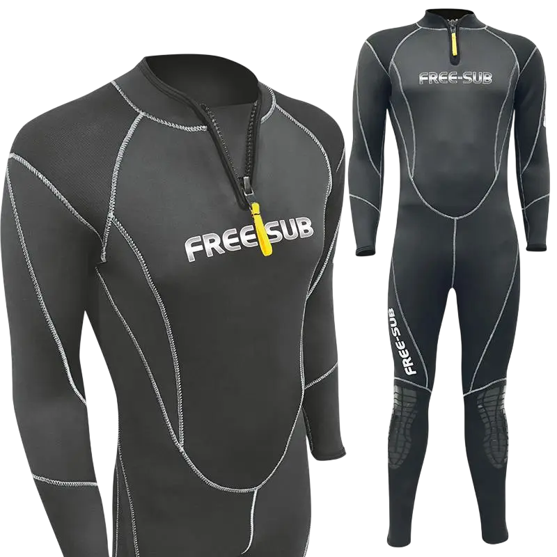

Dalış kıyafetleri (elbiseleri), dalgıcın vücut ısısını korumak (hipotermiyi önlemek) ve cildi sürtünme, kesik veya deniz canlılarının temasından (deniz anası vb.) korumak için tasarlanmıştır.
İşte dalış kıyafetleri hakkında, paletlerde olduğu gibi maddeler halinde detaylı bir inceleme:
1. Yalıtım Prensibine Göre Türler
Kıyafetler suyla etkileşimine göre üç ana sınıfa ayrılır:
slak Tip (Wetsuit):
- En yaygın kullanılan türdür.
- Çalışma Prensibi: İçeriye az miktarda su alır. Vücut ısısı bu ince su tabakasını ısıtır ve neopren malzeme bu sıcaklığın dışarı kaçmasını engeller.
- Sıcak ve ılıman sular için uygundur.
- Neopren malzemeden üretilir.
- slak tipe benzer ancak bilek, boyun ve fermuar kısımlarında sızdırmazlık contaları (seal) bulunur.
- İçeriye giren suyun sirkülasyonunu minimuma indirir, böylece vücut suyu tekrar tekrar ısıtmak zorunda kalmaz.
- Daha soğuk sularda ve derin dalışlarda tercih edilir.
- İçeriye hiç su almaz.
- Boyun ve bileklerde özel silikon/lateks contalar ve su geçirmez fermuarlar vardır.
- Isı yalıtımı, içine giyilen içlikler ve kıyafet ile vücut arasındaki hava tabakasıyla sağlanır.
- Çok soğuk sular (kış dalışları) ve profesyonel/teknik dalışlar için kullanılır. Kullanımı özel eğitim gerektirir.
- Kıyafetin hem içi hem dışı kumaş (jarse) kaplıdır.
- uru giyilebilir, dayanıklıdır ve yırtılması zordur.
- Genellikle Tüplü Dalış (Scuba) okullarında ve kiralık malzemelerde bu tür kullanılır.
- Dış tarafı kumaş kaplı, iç tarafı ise saf neopren (gözenekli süngerimsi yapı) halindedir.
- Vücuda vantuz gibi yapışır ve su devir daimini neredeyse sıfıra indirir. Isı yalıtımı çok yüksektir.
- Kuru giyilemez (mutlaka sabunlu su veya kayganlaştırıcı gerekir) ve giyerken tırnak batarsa kolayca yırtılır.
- Genellikle Zıpkınla Balık Avı ve Serbest Dalış yapanlar tercih eder.
Yarı Kuru (Semi-Dry):
Kuru Tip (Drysuit):
2. Malzeme Yapısı (İç Yüzey)
Özellikle Scuba ve Zıpkın/Serbest dalış ayrımında bu madde çok kritiktir:
arse Kaplı (Çift Taraflı) Neopren:
Açık Hücre (Open Cell) Neopren:
3. Kalınlık Seçimi
Suyun sıcaklığına göre neoprenin kalınlığı (mm cinsinden) belirlenir:
4. Kesim Modelleri
- Long John: Pantolon askılıdır, göğsü de kapatır (çift kat koruma sağlar).
- High Waist: Pantolon bel hizasındadır.
- Zıpkıncılar genelde başlıklı ceket ve pantolon şeklinde 2 parça kullanır.